Among Us / Unter Uns
2021 · Single-channel video
Among Us / Unter Uns is a single-channel video by Nickii Schamborski, 2021.
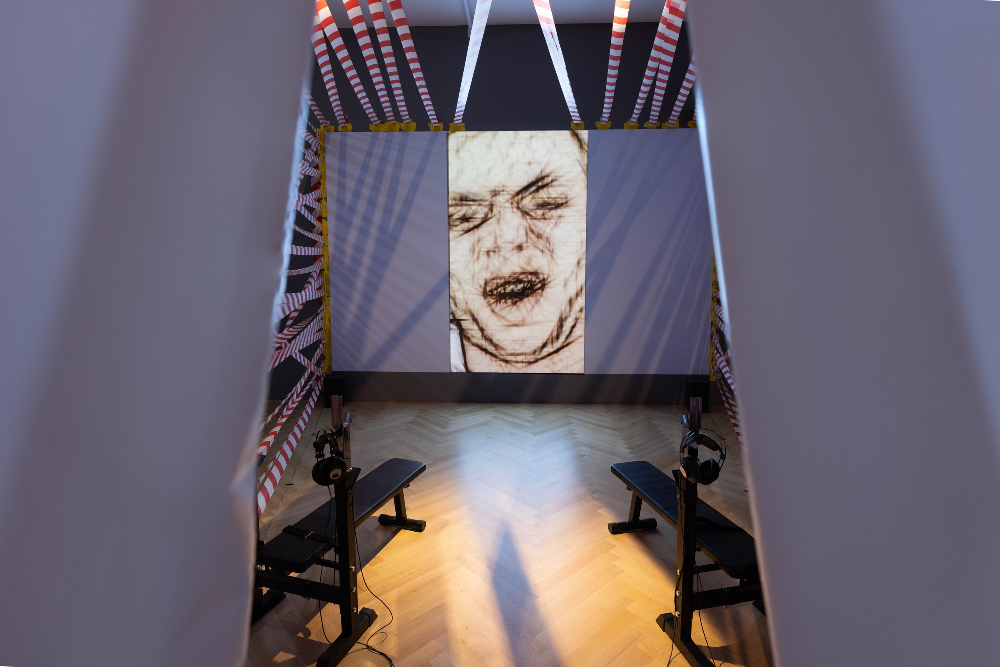
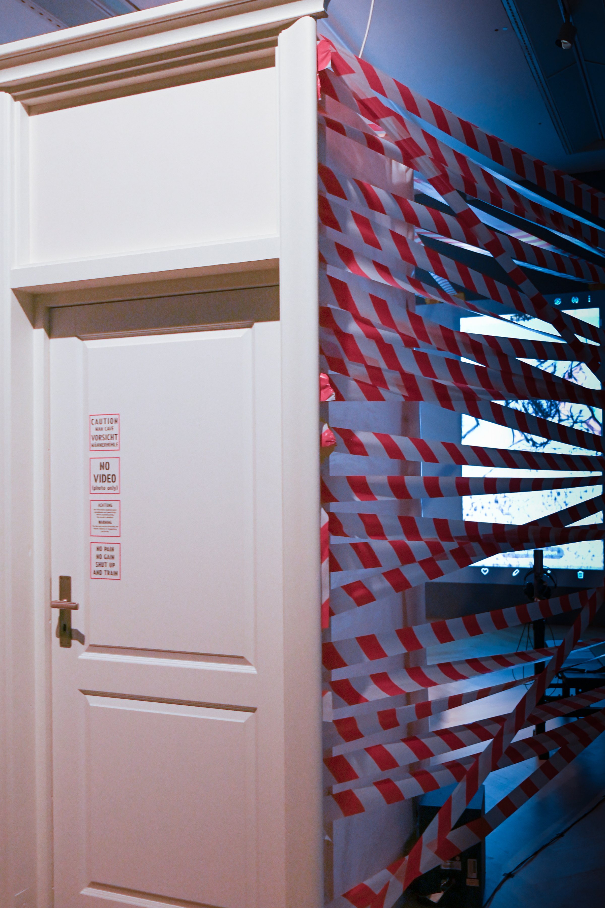
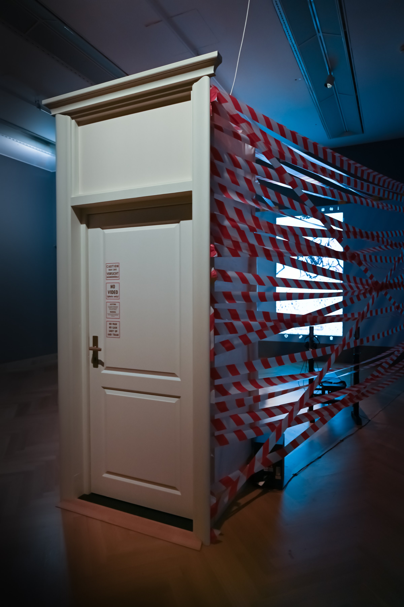
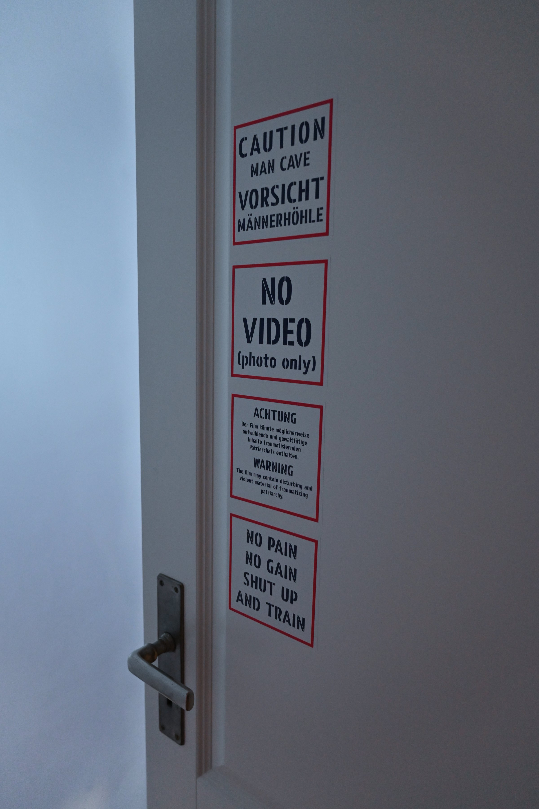
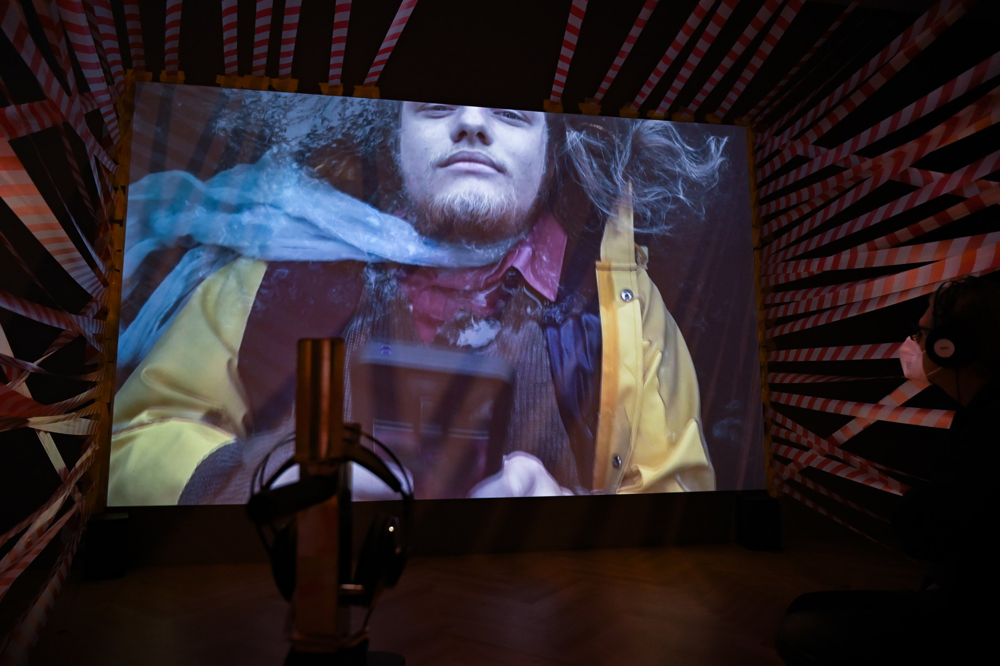
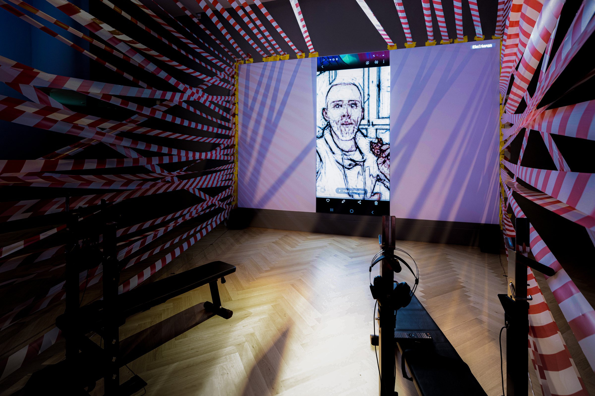
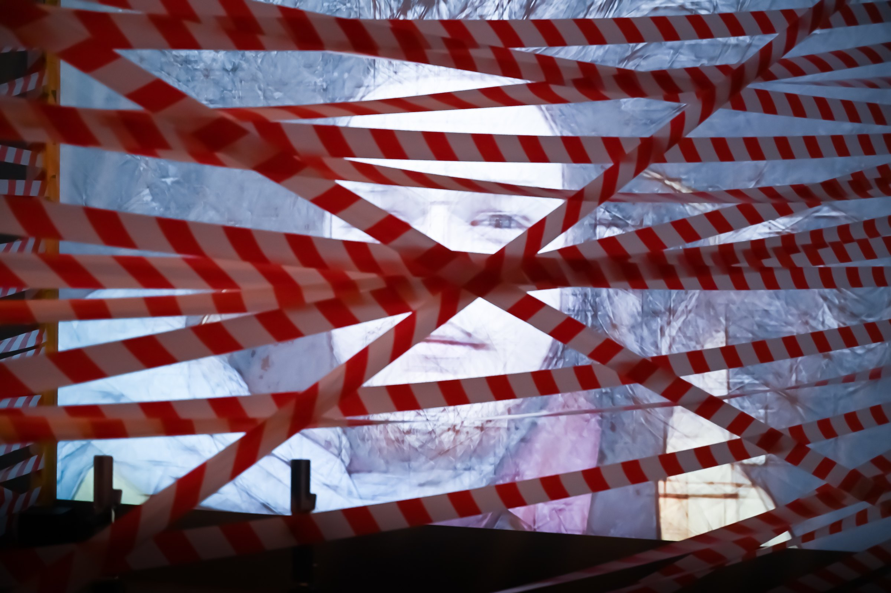
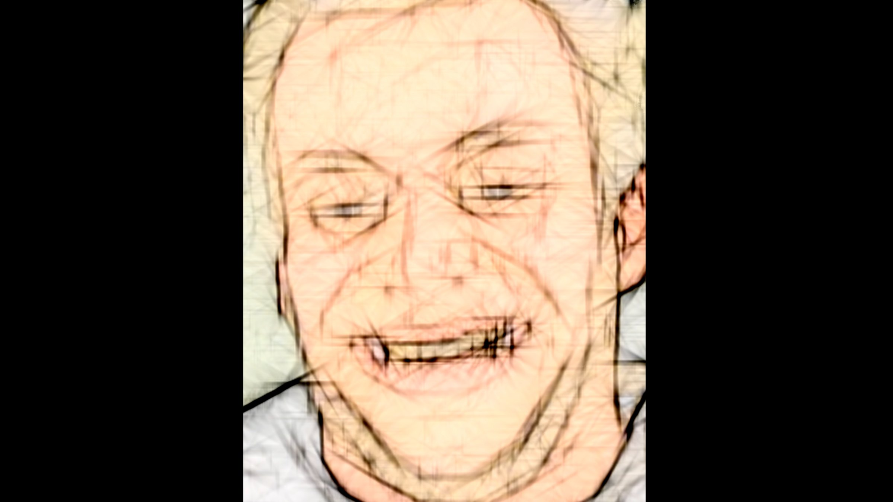
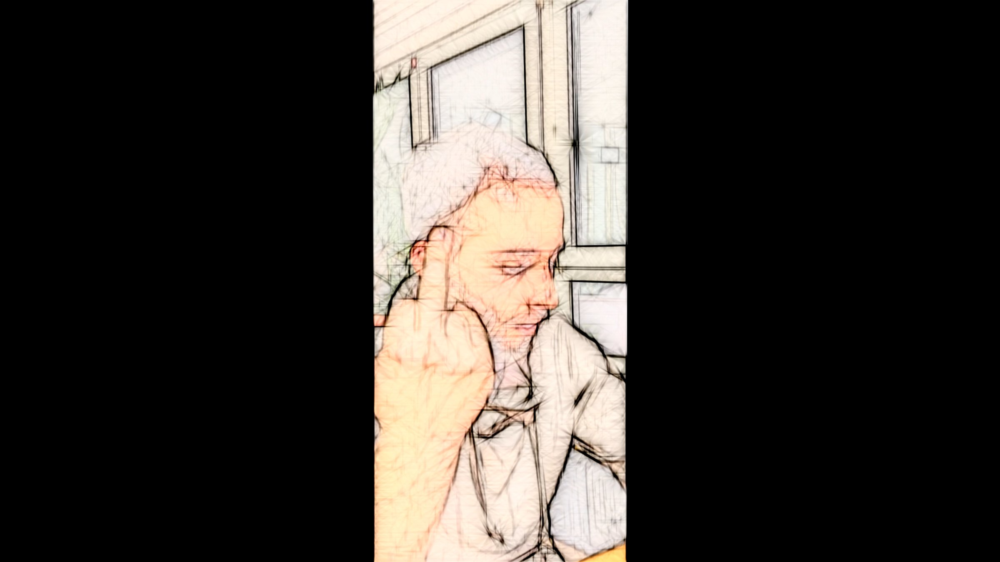
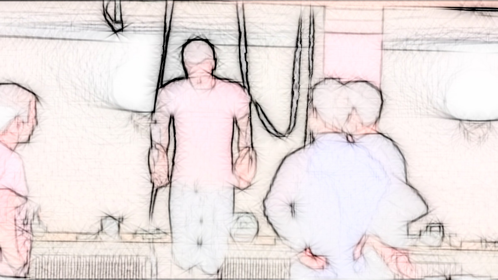
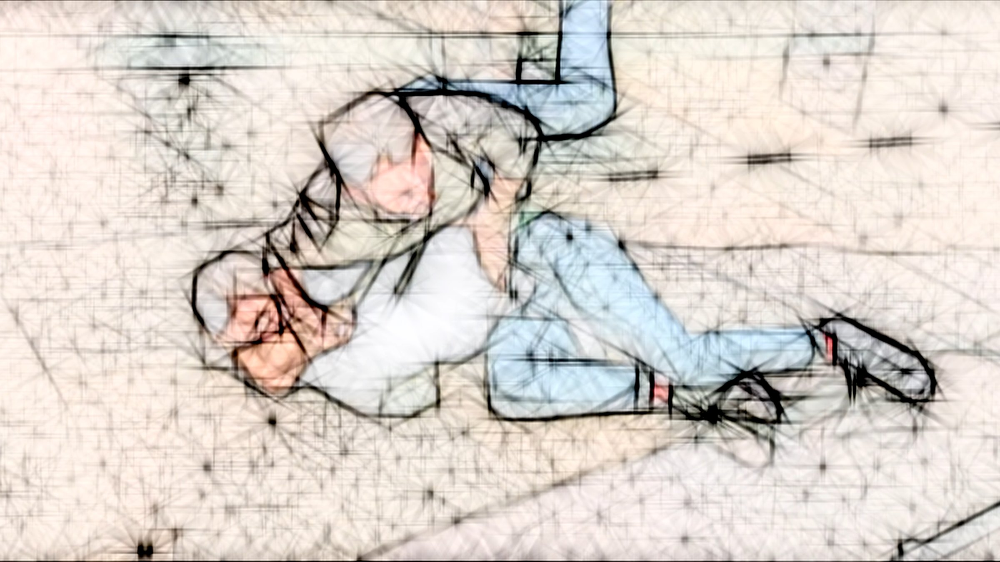
About the work
The video work 'Among Us' examines spaces where violent masculine socialisation and rape culture are normalised and reproduced. These spaces are simultaneously presented as progressive, subcultural and transgressive. The setting is a subculture gym's basement, where young people party. The camera follows their movements with slow motion and dramatic lighting. What might initially seem like a music video, dance film or party documentation is juxtaposed with a text that explores the very real violence lurking beneath the joyous, almost dreamlike surface.
Zur Arbeit
Die Videoarbeit 'Among Us / Unter Uns' untersucht Räume, in denen gewaltvolle männliche Sozialisation und Rape Culture normalisiert und reproduziert werden. Diese Räume geben sich zugleich als progressiv, subkulturell und transgressiv aus. Schauplatz ist der Keller eines Subkultur-Fitnessstudios, in dem junge Menschen feiern. Die Kamera folgt ihren Bewegungen in Zeitlupe und mit dramatischer Beleuchtung. Was zunächst wie ein Musikvideo, Tanzfilm oder eine Partydokumentation wirkt, wird mit einem Text kontrastiert, der die sehr reale Gewalt unter der fröhlichen, fast traumhaften Oberfläche thematisiert.
Details
- Year
- 2021
- Type
- Single-channel video
- Specs
- 4K, Dolby surround sound, 07:42 min, German. Cinematography: hitus Manleitner. Doorway, barrier tape